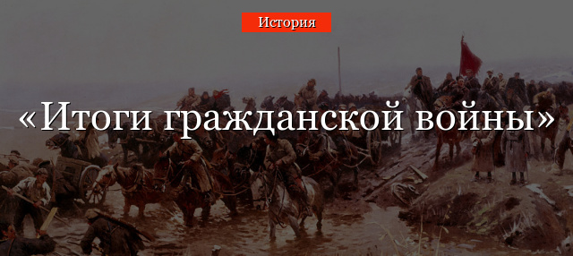

Итоги и последствия
Серьезным испытанием для России в начале XX века стала гражданская война. Ее можно датировать 1917-1922 годами, то есть от Октябрьской революции и до разгрома остатков Белой армии во Владивостоке и до создания СССР в конце 1922 года. Итоги гражданской войны были печальные, особенно демографические и экономические.
Территориальные и людские потери
Утраты территорий в Гражданскую войну легко оценить, если посмотреть на карту СССР на 1 января 1923 года и на карту Российской республики сентября 1917 и Российской империи на июль 1914 года.
Часть территорий к ноябрю 1917 года были потеряны в ходе участия Российской империи в Первой мировой войне. Их следует перечислить по пунктам:
- Все польские губернии.
- Территория Беларуси западнее линии Пинск-Минск-Западная Двина.
- Литва.
- Почти вся территория современной Латвии.
- Западная Волынь около Ковеля.
Далее был Брестский мир в марте 1918 года и неудачная для Советской России война с Польшей в 1920 году. В результате, к началу 1921 года на территории западных губерний Российской империи появилось четыре независимых государства – Литва, Латвия, Эстония и Польша. К последней отошла территория по линии Верхнедвинск-Заславль-Пинск-река Збруч. Помимо этого, Финляндия стала полноценным независимым государством, Карская область была отдана Турции, а Румыния захватила Бессарабию и южную часть Одесской области (Буджак).
Людские потери в Гражданской войне подсчитать крайне трудно из-за различий в методиках подсчета. На момент создания СССР в декабре 1922 года на его территории проживало порядка 140 миллионов человек, а в 1914 в Российской империи насчитывалось около 175 миллионов жителей.
Внутриполитические итоги
Победу в Гражданской войне одержали большевики. 30 декабря 1922 года они создали новое государство – СССР. В 1920-е ему пришлось пройти полосу признания и установления дипломатических отношений с другими государствами. В Лигу Наций он вступил только в 1934 году.